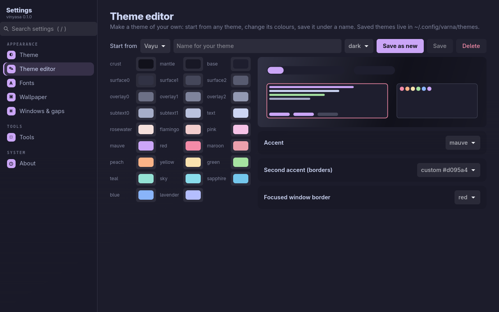
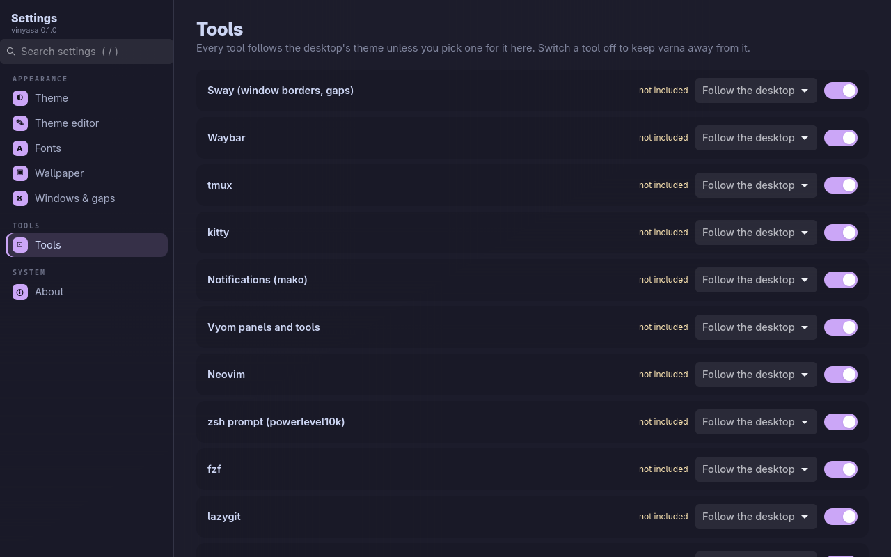

Vinyasa (विन्यास) is Sanskrit for "arrangement": setting things in their place.
GNOME and KDE each have one settings app; a tiling Wayland desktop usually has a folder of config files. vinyasa is the settings app for Vayu: a GTK 4 window with a page per area, a search box that finds any setting, and vim keys. Its core is themes: it drives varna, which sends one theme to every tool (sway, waybar, tmux, kitty, Neovim, notifications, panels, the prompt, the lock screen) and reloads them live.
#Pages
| Page | What you set |
|---|---|
| Theme | The desktop's theme (cards drawn in each theme's colours), the accent colour, dark/light twin, terminal transparency, whether GTK apps follow too |
| Theme editor | Your own theme: start from any theme, change any of its 26 colours and its accents with a live preview, save it under a name, delete it |
| Fonts | The interface font and size (GTK apps) and the monospace font and size (kitty) |
| Wallpaper | Pick one from ~/Pictures/Wallpapers, turn the daily wallpaper on or off, fetch today's |
| Windows & gaps | Gaps, border width, corner radius (sway, SwayFX) |
| Tools | Every tool follows the desktop unless you pick a theme for it; switch a tool off to keep the theme away from it; tools whose config doesn't include varna yet are marked |
| About | Versions, re-apply the theme everywhere, your themes folder, every tool's status |
Every change applies at once and the app restyles itself to match. Coming next: Wi-Fi, Bluetooth, sound, displays, keyboard, power, notifications, keybindings, date and language.


#Install
With kosha (installs varna too):
kosha install vinyasaOr by hand: install varna, then git clone https://github.com/Theyashsawarkar/vinyasa ~/.local/share/vinyasa && ln -s ~/.local/share/vinyasa/bin/vinyasa ~/.local/bin/vinyasa.
Requirements: Python 3.11+, GTK 4.10+ with PyGObject (python-gobject, gtk4 on Arch), varna. Optional: SwayFX for rounded corners, swaybg.
vinyasa opens it; vinyasa --page=wallpaper opens on a page. In Vayu, Super+, opens it.
#Keys
Vim keys, modal, the grammar every Vayu tool shares. Settings open in normal mode: keys are commands and typing changes nothing, so a stray key never edits a setting. i edits the focused text or number field (insert mode, Esc back); / types in the search. Space is the leader: press it and a strip shows what can follow (Space t pages, Space a add, Space d delete, Space o open, Space u toggles, Space Space every action and page). ? shows every key.
| Key | Does |
|---|---|
j / k | Next / previous page (sidebar), or control (page); counts work: 3j |
h / l | Turn the focused value down / up: a slider, a number, a menu, a switch, Dark/Light, a grid of cards (5l: five steps); else the sidebar / the page |
H / L | Previous / next page |
gg / G | First / last page (sidebar) or control (page) |
Ctrl+d / Ctrl+u | Half a page down / up |
Enter | Activate the focused control (flip a switch, open a menu, pick a card), or open the page |
i | Edit the focused text or number field (insert mode; Esc back) |
/ | Search every setting (theme and tool names too); Enter opens the first match, Ctrl+j / Ctrl+k move, Esc clears |
r | Reload every page from varna (Space r) |
Space t t e f w i o a | Theme, Theme editor, Fonts, Wallpaper, Windows & gaps, Tools, About |
Space a a | A theme of your own (the editor, typing its name) |
Space e e | Edit a theme (the editor) |
Space d d | Delete the custom theme open in the editor (asks: y says yes) |
Space o e / Space o f | Open varna's config file / your themes folder |
Space u f | Toggle fullscreen |
Space Space | The palette: every action and page, filtered as you type |
? | Every key (Space ?) |
q / Esc | Quit (Ctrl+q and Space q too) |
Moved in this version: Space no longer presses the focused control (it's the leader; Enter does), and h / l change the focused value instead of only jumping between the sidebar and the page.
#How it works
vinyasa holds no settings of its own. Theme, accent, fonts, gaps and per-tool picks are varna's (~/.config/varna/varna.toml, applied with varna's engine, so varna on the command line and vinyasa always agree); the wallpaper is ~/Pictures/Wallpapers/current.jpg and wallpaper.timer; fonts also go to GTK's settings. Applying runs in the background, so the window never freezes while tools reload.
#Contributing
See CONTRIBUTING.md; design decisions are in docs/adr.
#License
MIT.